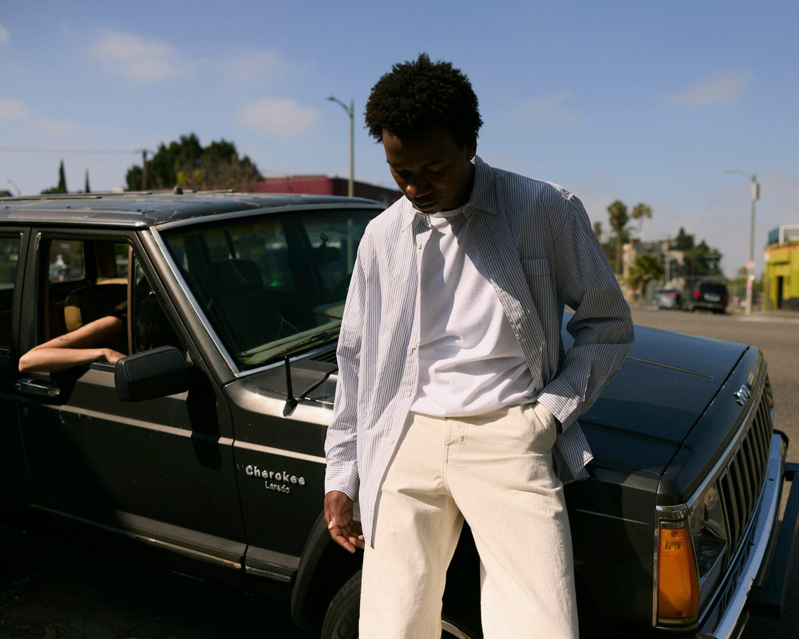
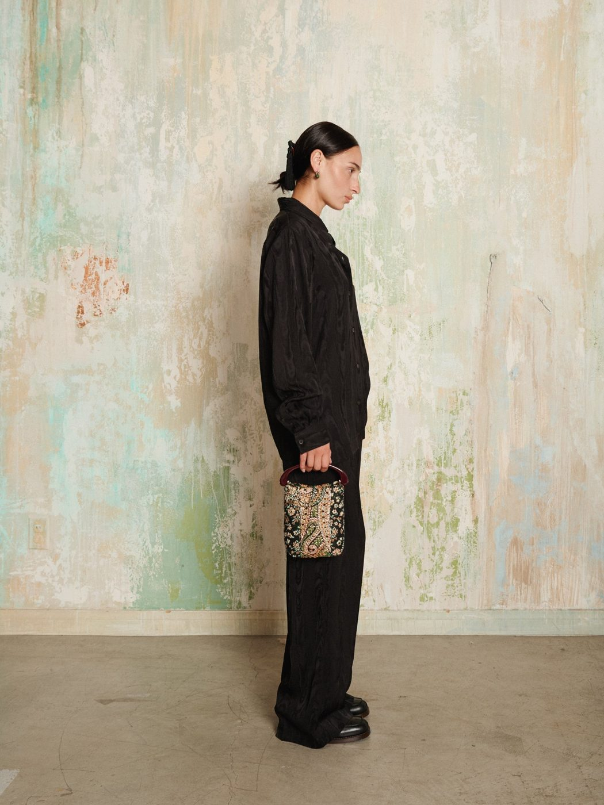
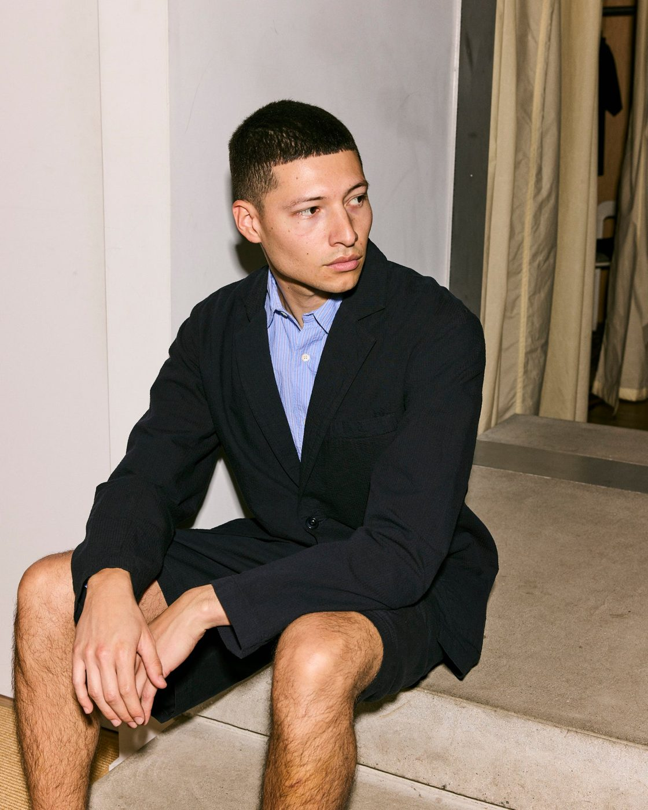
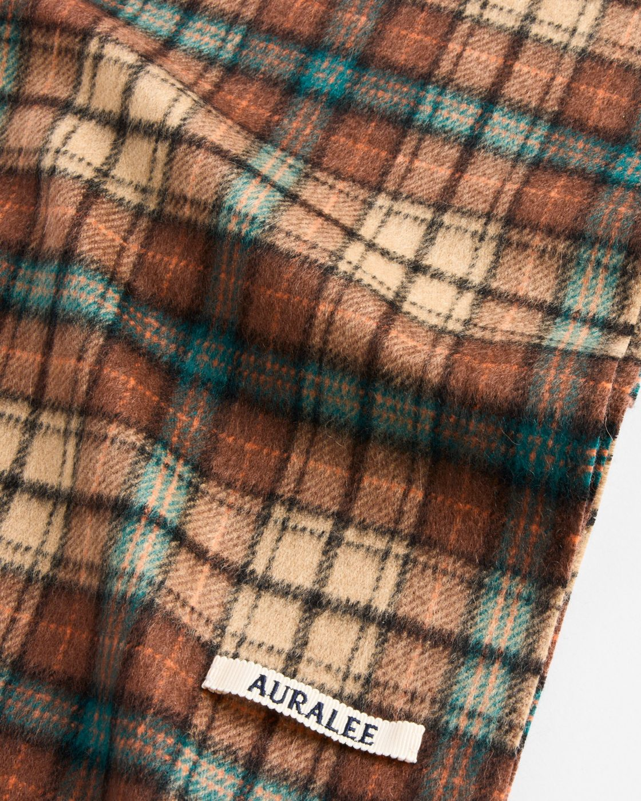
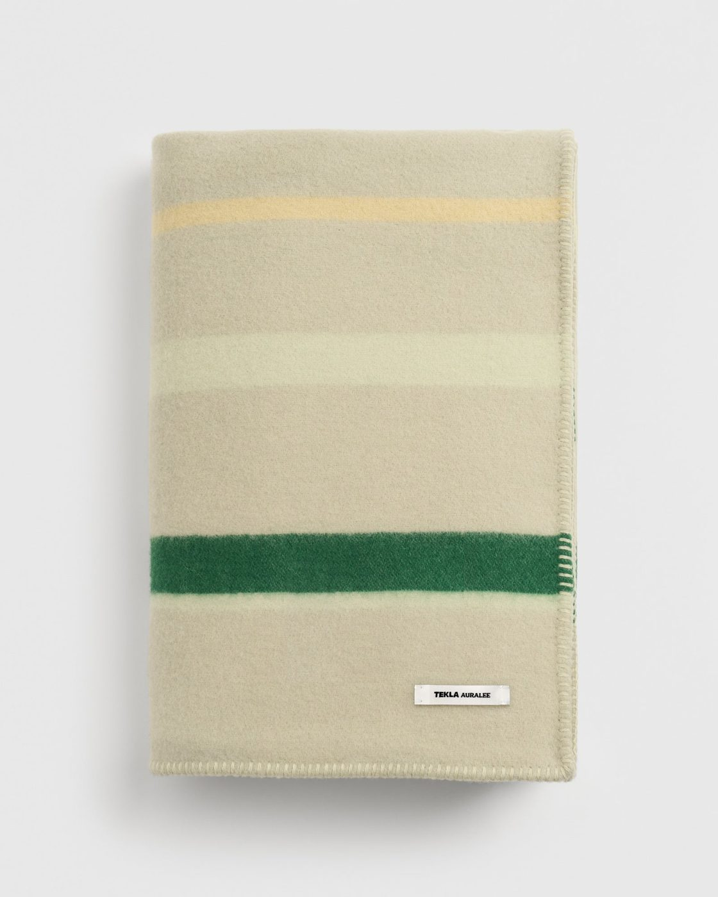
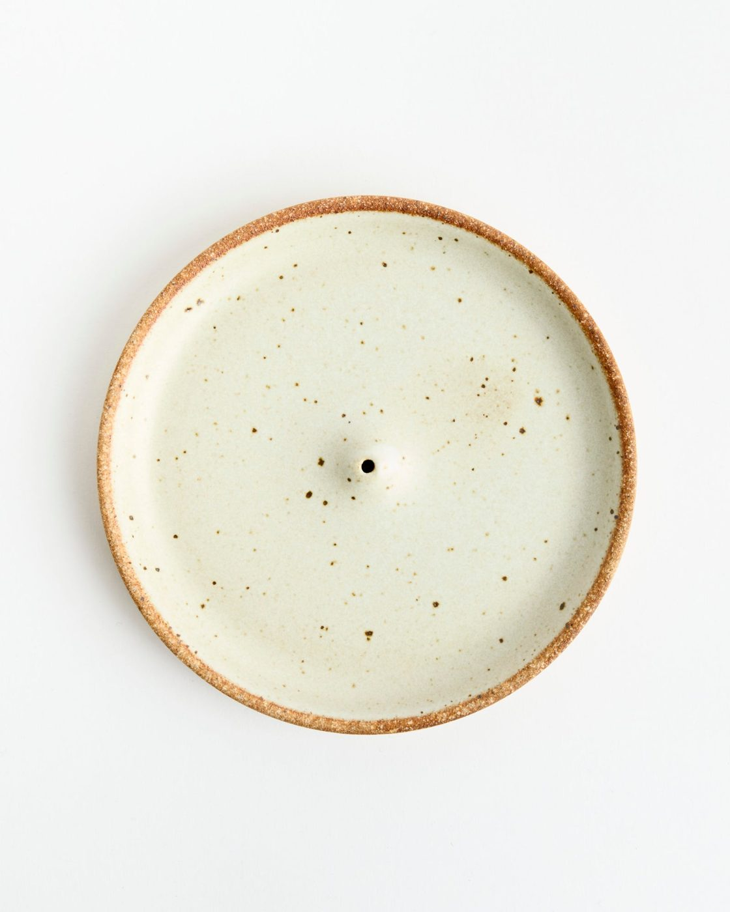
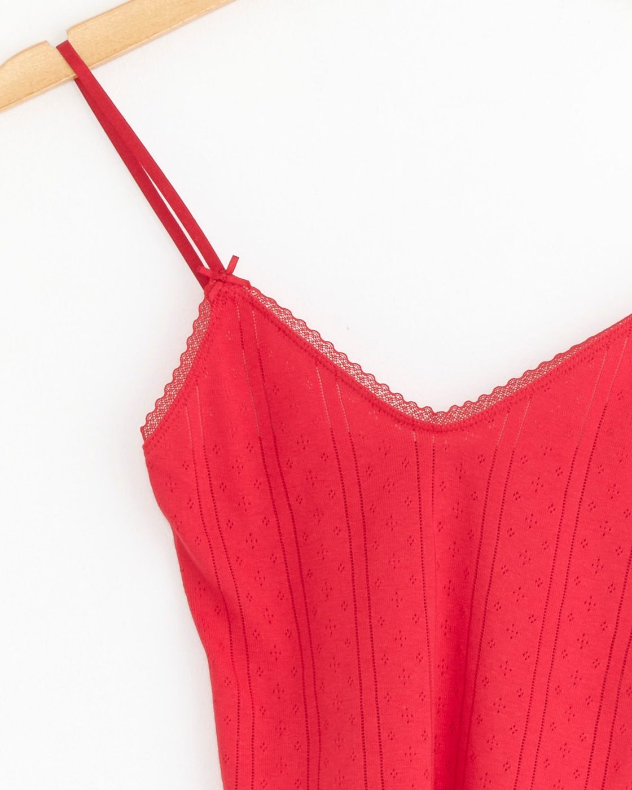

Company study · 2026-11-16
Mohawk
Visual study (mood board) of Mohawk General Store, a Los Angeles multi-brand store with the in-house label SMOCK: design and style from its whole website.
Mood
Quiet Los Angeles tailoring. Brushed wool checks in brown, olive and charcoal, hung square on wooden hangers against white, then taken out into sun, street and painted plaster. A curated store, not a loud brand: the objects and the light do the talking.


(01)

(02)

(03)

(04)

(05)

(06)

(07)Palette, measured from the images
#514235#201F1E#A17855#B8AE9B#E8E8E8#F3344BVisual themes
01 Hanger and detail pairs. Key motifs: wooden hanger, white ground, a full view followed by a fabric close-up. Sub motifs: collar and cuff crops, trousers hung from a rail.
02 Earth checks. Key motifs: plaid, argyle, tweed and flannel in brown, olive, charcoal and rust. Sub motifs: fringed scarf, corduroy, woven labels.
03 Los Angeles ease. Key motifs: street light, parked car, doorway, painted plaster wall. Sub motifs: loose tailoring, knit tie, white shirt.
04 Quiet home objects. Key motifs: speckled ceramics, incense, spiral notebooks, striped Tekla blankets. Sub motifs: brown percale bedding, tan leather tray.
05 One bright note. Key motif: red pointelle camisole. Sub motifs: lace trim, navy rib sets.
Hero material
Product names lean to wool and cashmere: of 183 distinct product links in the ten pages, 26 carry 'wool' and 13 'cashmere' in the link, 11 cotton, 7 check and 6 plaid. SMOCK is described as an artisanal label made in Los Angeles and Japan (https://www.mohawkgeneralstore.com/pages/about-us, retrieved 2026-11-16).
Brushed wool and tweed in check, matte and slightly hairy, is the surface the store sells and photographs best. Close-up at (04), a scarf (not SMOCK).
Visual elements
Photography. Two kinds on every page. Product shots are 4:5 portrait, one item on white or pale gray, soft even light, shot twice (full view, then a close-up crop) in the file names. Editorial shots, found on the SMOCK and new arrivals pages and not on the others read, are daylight and warm: street, car, doorway, painted wall.
Type and graphics. Helvetica or Arial throughout the interface (CSS), black logo, no decorative type. Woven labels in the photos carry the brand names.
Layout habits. Product cards in portrait 4:5 with a color-swatch component, one shared strip of about 20 'trending' products loaded on every page, black announcement bar.
Detail. Fringes on scarves, ribbed cuffs, hanging loops, notched collars, metal half-zips.
Color: interface and product
Interface (CSS, page source, scheme light). #ffffff page, #f5f5f5 alternate band, #f4f4f4 card ground, #1f2124 text and dark band, #1f1f1f deep band, #282828 buttons, #f9f9f9 button text, #000000 announcement bar, #aaaaaa muted text. All neutral; no brand hue.
Product and campaign (measured). Umber #514235, ink black #201f1e, camel #a17855, stone #b8ae9b, studio gray #e8e8e8; accents red #f3344b (camisole), oxblood #8d1c2d (plaid shirt), pine green #2d5f41 (blanket stripe), olive #62573d (argyle), navy #1f202a, rust #9b6248 (scarf). By product link words: black 20, brown 13, navy 6, white 5, green 5, natural 5, grey 3, red 3.
Patterns across pages
Repeated. Check or plaid on the home strip (shirts, scarf, argyle sweater: 6 of the first 20 images), on the SMOCK page (black and red plaid shirts), and in the product links (13 check or plaid). Stripe appears in blankets and 3 links. Corduroy and tweed in browns recur on home, man and product pages.
Consistent. Neutral interface, white-ground product shots with a close-up pair, earth colors.
Changes. SMOCK adds editorial street photos, ties and navy or gray; women's pages add red and navy knits and black footwear; objects and textiles go to cream, tan and pine green on gray grounds.
Visual story
black announcement bar, header with man and woman shops, trending strip, product cards by season; About Us tells the 2008 Echo Park start, the 2010 move to Silver Lake and SMOCK since 2014. selection first, light second, story third; the store speaks through what it chooses.
Notable products
Auralee check scarf and flannel shirt. Show the brushed check that sets the tone.
SMOCK jackets, shirts and ties. The only own label; tonal, tailored and plain.
Tekla x Auralee blankets. Carry the stripe and the pine green into the home.
Method and limits
Palette basis. board images (01) to (07) plus ten more images from the home, SMOCK, textiles, shoes and new arrivals pages (plaid shirts, argyle sweater, tweed coat, blazer, blanket, bedding, sneakers); k-means over all, six clusters kept; the red is the camisole's measured cluster (image 07, 15 percent of that image) and was added because red is the site's one saturated accent
Limits. Pages read on 2026-11-16: the home page, About Us, five collection pages (Man clothing, New arrivals woman, SMOCK, Objects, Bedding and textiles), the Shoes collection page and two product pages (Our Legacy Collapse Car Coat, Auralee Wool Fulling Flannel Shirt); ten pages in all. Interface colors are the theme values in the page source (scheme 'light'); the CSS files base.css, global.css, section-footer.css, component-badge.css, swish-buttons.css, template-collection.css, component-card.css, section-popular-products.css and section-media-slideshow.css were also scanned. Mohawk is a retailer: most garments pictured are other brands (Auralee, Our Legacy, Tekla and others), so the look is the store's selection and photography, with SMOCK as the only own label. The close-up (04) is a scarf, not SMOCK. Candidates for a later deeper look only: wool check flannels and tweeds (Auralee, SMOCK); SMOCK fabric sourcing in Japan and Los Angeles. A material specialist and reverse engineering are candidates only.
Image credits
- (01) Man in white shirt and cream trousers leaning on a dark car in street sun, SMOCK collection page. source (file 260624_SMOCK10950)
- (02) Woman in black seen from the side against a pale green and ochre painted wall, new arrivals woman. source (file mohawkgeneral_august20262559)
- (03) Man in a black blazer seated in a doorway, SMOCK collection page. source (file 260324_Smock_0126)
- (04) Close-up of a rust, teal and cream plaid scarf with woven Auralee label, home page strip. source (file 287307_IMG_074)
- (05) Folded Tekla x Auralee lambswool blanket in cream with a pine green stripe, textiles page. source (file Tekla_Auralee_Lambswool_Blanket_Pine_Stripes_1)
- (06) Speckled cream ceramic incense dish with a tan rim, objects page. source (file 281222_IMG_0026)
- (07) Red pointelle knit camisole with lace trim on a wooden hanger, new arrivals woman. source (file 292730_IMG_143)
Images are the brand's own, shown for study only; each is listed above with its source page.